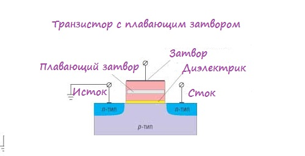
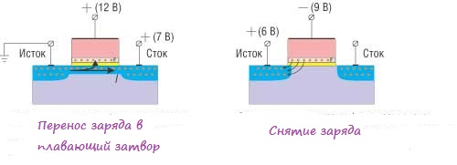

Физическое устройство
Cердцем многих устройств памяти является полевой транзистор с плавающим затвором. Гениальнейшее изобретение 70-х годов 20-го века. Его отличие от обычных полевых транзисторов заключается в том, что между затвором и каналом, прямо в диэлектрике, расположен еще один проводник – который и называют плавающим затвором. Вот как все это выглядит:
 На рисунке мы видим сток-исток-затвор , а также расположенный в диэлектрике дополнительный проводник. Давайте разберемся как же это устройство работает. Создадим между стоком и истоком разность потенциалов и подадим положительный потенциал на затвор. Что тогда произойдет? Правильно, через полевой транзистор, от стока к истоку потечет ток. Причем величина тока достаточно велика для того, чтобы “пробить” диэлектрик. В результате этого пробоя часть электронов попадет на плавающий затвор. Отрицательно заряженный плавающий затвор создает электрическое поле, которое начинает препятствовать протеканию тока в канале, в результате чего транзистор закрывается. И если отключить питание транзистора, электроны с плавающего затвора никуда не денутся и его заряд останется неизменным на долгие годы. Но, конечно же, есть способ разрядить плавающий затвор. Для этого надо всего лишь подать на “основной” затвор напряжение противоположного знака, которое и “сгонит” все электроны, в результате чего плавающий затвор останется не заряженным.
Собственно так и происходит хранение информации – если на затворе есть отрицательный заряд, то такое состояние считается логической единицей, а если заряда нет – то это логический ноль.
 С сохранением информации разобрались, осталось понять как нам считать информацию из транзистора с плавающим затвором. А все очень просто. При наличии заряда на плавающем затворе его электрическое поле препятствует протеканию тока стока. Допустим при отсутствии заряда мы могли подавать на “основной” затвор напряжение +5В, и при этом в цепи стока начинал протекать ток. При заряженном плавающем затворе такое напряжение не сможет заставить ток течь, поскольку электрическое поле плавающего затвора будет ему мешать. В этом случае ток потечет только при напряжении +10В (к примеру ). Таким образом, мы получаем два пороговых значения напряжения. И, подав, к примеру +7.5В мы сможем по наличию или отсутствию тока стока сделать вывод о наличии или отсутствии заряда на плавающем затворе.